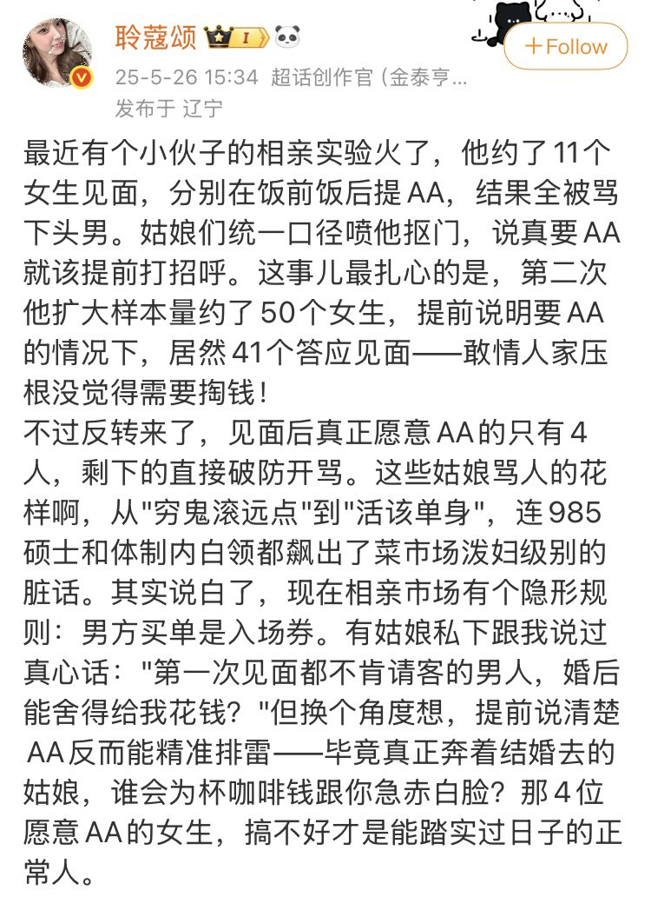

xx1012000456
@xx1012000456
@zqtlovekris99 我总觉得这种理论有不对的地方，女性如果不向男方开放性权利和生育权，99%相亲根本就不会成立。一开始女性就是被物化的部分，走到一半又开始装模作样的谈平权和自我觉醒😅相亲是以女性出卖两权开始的，真这么论不得狠狠骂自己怎么轮到了相亲的地步吗？

🍀🍥竹蜻蜓🍥🍀（戒od第4天）
@zqtlovekris99
我其实也不懂那些女的怎么想的……我妈也是一直跟我说，谈恋爱要先测试男的愿不愿意跟你花钱，但是我觉得既然我要男女平权，那首先在花钱方面就要AA。以前还是顺女的时候，我跟男生出去吃饭旅游之类的花钱，都是我主动提AA的，我真不懂人家又不是你金主，非亲非故的凭啥默认男方花钱啊…… https://t.co/iiyrfsMQUr